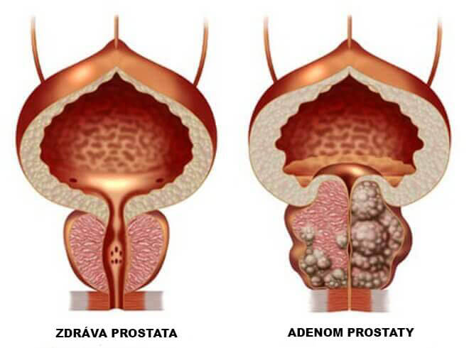
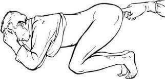
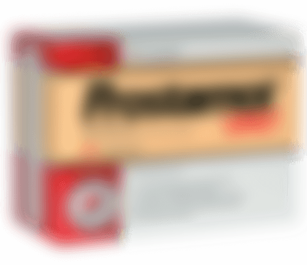

V USA a v západoevropských zemích se všichni muži léčí prostatitidu během 2-3 týdnů, jednou v životě, jednou provždy. (metoda je popsána níže)
Mezitím v České republice: chamtiví lékaři v tajné dohodě s lékárnami skrývají účinná léčiva a každoročně lákají od lidí peníze
Prostatitida je nejčastějším onemocněním u mužů ve věku nad 40 let a lékaři zaznamenávají nepříjemnou tendenci "omlazení" onemocnění. Stále častěji se obracejí na lékaře muži s "problémy" ve věku 30, 25 a dokonce i 20 let.
Prevalence onemocnění lékaři vysvětlují jeho předpoklady: každý muž, který
- vede sedavý zpusob života,
- vede nepravidelný sexuální život,
- má špatné zvyky,
- měl infekční onemocnění
- má dědičné predispozice
- měl stres, nemoc nebo hypotermii
téměř zaručeně bude mít problémy s prostatou. Čím víc předpokladů, tím dřív se dostaví problémy. Někdo je bude mít ve 25 let, někdo ve 45 let, je to jen otázka času.
Symptomy prostatitidy – otestuj se:
V roce 2017 čeští urologové zveřejnili děsivé statistiky: více než 55% mužů starších 40 let čelí problémům s prostatou v té či oné podobě. Určit, zda máte prostatitidu je poměrně jednoduché i bez lékařského vzdělání, většina příznaků je specifická:
- Tupá nebo pichlavá bolest
- v dolní části břicha, v šourku,
- v hrázi nebo penisu
- Dysurie
- časté močení, pálení v močové trubici
- pocit neúplně vyprázdněného močového měchýře,
- potíže s močením (slabší tok)
- Porucha sexuální funkce
- snížená sexuální touha
- zhoršení trvání a kvality erekce
- Ejakulační dysfunkce:
- předčasná ejakulace nebo problémy s jejím dosažením
- slabá ejakulace
- Zvýšená únava a podrážděnost organismu
Dokonce i přes zjevný pokles kvality života mnoho mužů již léta žije s prostatitidou a neví o nezvratných důsledcích, ke kterým mohou vest víceméně slučitelné s životem nepříjemné pocity.

Neléčená prostatitida vždy vede k adenomu prostaty ("mužská
smrt")
Můžeme je zčásti pochopit, zvláště s ohledem na stav medicíny v zemi. V drtivé většině případů po obdržení diagnózy se návštěvy urologu stávají těžkým úkolem. Lékaři zmírní akutní příznaky s "léky doporučenými lékárníkem", ale při každé hypotermii nebo nedodržení režimu se prostatitida "objevuje znovu".
Jak se prostatitida léčí v České republice (a jak by se NEMĚLA léčit)
Bohužel v naší zemi se stávající úrovní medicíny (která je skoro na posledním místě mezi vyspělými evropskými zeměmi), nemůžete se zbavit prostatitidy, i když opravdu chcete.
Standardní postup léčby prostatitidy v České republice.
- Muž jde do polikliniky. Placené nebo bezplatné - na tom nezáleží, protože nakonec stejně budete muset zaplatit. V bezplatné jsou navíc nekonečné fronty.
- Lékař provede vyšetření, předepíše spoustu analýz. Některé dokonce nepotřebuje, ale co když náhodou najdou nějakou nemoc, kterou on může léčit. Kromě toho samotné analýzy také stojí peníze.
- Po vyšetření lékař diagnostikuje "prostatitidu" a předepisuje "doporučené léky". Předepsané léky jsou takové, které jsou určeny ke zmírnění akutních symptomů onemocnění, nikoliv však k léčbě chronické prostatitidy. A samozřejmě urolog doporučuje léky společnosti, jejichž zástupci přinesli mu co nejvíce peněz. Tyto léky všichni znají.
- Kromě "doporučených" léků na zmírnění symptomů lékaři vždy předepisují rektální
masáž prostaty nebo léčbu přístroji s podobným účinkem. Je to ponižující a velmi
nepříjemná procedura, masáž se provádí prstem skrze konečník muže. V průměru taková
masáž zahrnuje 10-14 návštěv. Každou návštěvu samozřejmě musíte zaplatit. V
západoevropských zemích se tento typ masáže nedělají více jak 20 let, protože
moderní léky mohou léčit prostatitidu bez něj!

- Vedle základní léčby lékaři často předepisují léky na zlepšení sexuálních funkcí, zlepšení kvality spermií, "obnov
- Zpravidla, v důsledku takové léčby prostatitida, pokud bude vyléčena, tak pouze dočasně. A pak se vrátí s novou zdvojenou silou. Nakonec, jakmile "konzervativní terapie" přestane pomáhat, lékař předepisuje operaci prostaty, která velmi často vede k impotenci.
Takže pokud máte prostatitidu v České republice, budete platit chamtivým lékařům a lékárníkům 15000-20000 Kč ročně! V první řadě urologové sestavují léčbu na základě finančních možnosti pacienta. A pak, když vám "doporučené léky" přestanou pomáhat, prostě pošlou vás na operaci. Tak funguje urologicko-farmaceutický byznys v České republice.
Změní se situace v České republice k lepšímu?
Bohužel není třeba očekávat žádné pozitivní změny v oblasti práce českých lékáren a lékařů, protože farmakologický byznys je multimiliardový a zisk z něj dostávají nejvyšší úředníci. Pravděpodobně sami o tom víte.
Dnes však není nutné kupovat léky v lékárnách. Můžete to udělat přes internet na speciálních webových stránkách. Teprve nedávno se v České republice objevil jeden z nejúčinnějších západních přípravku - . A téměř hned získal obdiv.
Pojďme porovnat, čím se liší od nerozšířenějšího v zemi léku na prostatitidu , nabízeného lékárnami

|
 Další náprava |
|
|---|---|---|
| Obsah balení: | sáček prášek: 20 balení | Kapsle: 60 ks v balení |
| Účinky: | Zcela zbavuje prostatitidy, včetně chronické. Jednou provždy. Jen za 1 kúru užiti přípravku. | Odstraní pouze akutní příznaky prostatitidy - bolesti a poruchy močení. |
| Další účinky: | º Zvyšuje libido º Zabraňuje předčasné ejakulace º Zvyšuje potenci º Normalizuje funkci močového měchýře º Zlepšuje stav krevních cév |
Změkčení stolice, zvýšená střevní peristaltika |
| Nežádoucí účinky, škodlivé pro tělo | Žádné. Zcela přírodní složení.. | º Při častém používání může vyvolat maligní změny v
prostatě º Snižuje potenci º Způsobuje střevní problémy º Potlačuje imunitu, podporuje rozvoj alergií º Způsobuje silnou bolest břicha |
| Princip působení: | Komplexně působí na prostatu speciálním složením z 6 přírodních složek, poskytuje protizánětlivý a posilující účinek. Odstraní veškerou patogenní flóru z prostaty, zlepšuje strukturu a funkce prostaty. Doporučuje se pro chronickou, nebakteriální a bakteriální prostatitidu. | Dočasně zmírňuje bolesti v prostatě a maskuje průběh onemocnění. Po skončení léčby se však onemocnění zhoršuje. |
| Componență: | Přírodní rostlinné složky a vitamíny | Jedinou přírodní složkou jsou drcené plody trpasličí palmy (není to ani extrakt!). Všechno ostatní sama chemie - oxid titaničitý; barvivo oxid železnatý; červené barvivo (E124), atd. |
Klaus Seehofer, specialista laboratoř Paula Ehrlicha pro očkovací látky a biomedicínská léčiva, profesor katedry urologie
Metoda neinvazivní léčby prostatitidy pomocí přírodního doplňku založeného na extraktu borovic byla poprvé objevena německým urologem Klausem Seehoferem v rámci výzkumu laboratoř Paula Ehrlicha pro očkovací látky a biomedicínská léčiva.
Klaus Seehofer poprvé klinicky prokázal 98% účinnost své metody a začal používat ve své praxi doplňky založené na extraktu borovic pro léčbu akutní a chronické prostatitidy.
Od roku 1996 se doplňky založené na extraktu borovic stávají lékařským standardem a jsou doporučovány pro lékařskou praxi v Německu a později ve všech zemích EU a v USA.
Ke dnešnímu dni nejúčinnějším přípravkem pro léčbu prostatitidy na základě extraktu borovicy je , který je populární v celé civilizované Evropě.
Komentáře
Petr
Díky za zajímavý článek! V České republice je všechno zkorumpováno na nejvyšší úrovni, je dobré, že internet je stále k dispozici. Objednal jsem . Budu se léčit.
Alexandr
Můžu je potvrdit! je zázrak. Koupil jsem ho v Německu, když jsem loni v létě jel za příbuznými. Předtím jsem trpěl chronickou prostatitidou vice než 10 let. Snažil jsem se léčit, ale jak bylo napsáno výše, léčba poskytla pouze dočasný účinek. Po užití přípravku prostatitida zcela zmizela. Více než půl roku se neobjevila. Dříve bych o tom mohl jen snít. Doporučuji všem mužům. Pomůže!
Dalimil
Objednal jsem. Jsem příjemně překvapen. Děkuji!
Čestmír
Také mám zkušenosti s léčbou prostatitidy tímto přípravkem. Koupil jsem ho na uvedeném webu, akorát tenkrát nebyly žádné akce. Ale to nevadí, důležité, že pomohl mi zbavit se prostatitidy asi za 4 týdny bez jakýchkoliv masáží.
Štefan
Objednal jsem
Miroslav
Sledoval jsem nějaký televizní pořad o farmakologickém byznysu v České republice. Něco jako novinářské vyšetřování. Tam také mluvili o tomto přípravku. Raději objednávejte, dokud ještě je na prodej.
Stanislav
Mám chronickou prostatitidu od 28 let. Teď je mi 41 let. Během této doby léčil jsem se dvakrát, když došlo k vážným zhoršením. Naposledy mi lékaři sotva zachránili. Řekli, že stačilo málo a prostatitida by se proměnila v rakovinu prostaty. Proto doporučuji každému, kdo má prostatitidu co nejdříve se ji zbavte. Je to velmi zákeřná nemoc.
Věra
Musím to objednat manželovi. Díky!
Česlav
Koupil jsem. Takové akce nikdy nebyly. Díky výrobcům! Zděnek
Zděnek
je nejlepší lék ze všech! Souhlasím s autorem článku a všemi komentátory, kteří ho chválili. Používal jsem to asi před 3 měsíci. Prostatitida zmizela úplně! Trpěl jsem prostatitidou několik let, kvůli ní měl jsem problémy s erekcí a předčasnou ejakulací. Nyní je vše v pořádku.
David
+500. Vynikající prostředek
Adam
Přečetl jsem si více o na webu. Působivé! Objednal jsem. Slíbili mi, že do 5 dnů budu to mít na poště. Pohodlné.
Jan
Kluci, je to opravdu něco úžasného! Koupil jsem ho minulý týden. Nyní nemám jediný příznak prostatitidy. Bolest zmizela, přestal jsem často hodit na wc, nemám nepohodlí během močení. Navíc se potence výrazně zlepšila a doba pohlavního styku se zvýšila. Cítím se skvěle. Já bych za to zaplatil i víc. Účinnost přípravku mě příjemně překvapila.
Miloš
Děkuji!